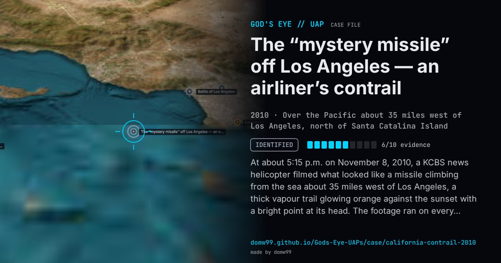

The “mystery missile” off Los Angeles — an airliner’s contrail

At about 5:15 p.m. on November 8, 2010, a KCBS news helicopter filmed what looked like a missile climbing from the sea about 35 miles west of Los Angeles, a thick vapour trail glowing orange against the sunset with a bright point at its head. The footage ran on every network as the “mystery missile”, and for a day and a half nobody official could say what it was: the Pentagon said it was not a Defense Department launch, NORAD and Northern Command said it was no foreign military launch and no threat, the Navy said it was not theirs, and the FAA had approved no commercial launch. Contrail specialists and the analyst John Pike said at once that it was an aircraft contrail seen end-on, the head of the trail moving far too slowly for a rocket; the FAA’s radar replays found no fast unknown target, and on November 10 the Pentagon said there was “no evidence to suggest that this is anything else other than a condensation trail from an aircraft.” NASA researchers later found the trail on the GOES-11 weather-satellite image as a long horizontal streak. A few experts said they could not rule out a missile, but the incident is now a textbook example of foreshortened perspective.
Explanation
A condensation trail from an airliner flying towards the camera, which made a horizontal trail look like a vertical column lit by the setting sun. The FAA’s radar replays found no fast unidentified target, the Pentagon said there was no evidence it was anything else, and NASA’s contrail specialists found the trail on GOES-11 satellite imagery as a horizontal streak. US Airways Flight 808 from Honolulu and UPS Flight 902 were named as candidates.
What was seen
Shape: A thick, glowing vapour trail apparently rising from the sea, with a bright head
Witnesses: A KCBS news-helicopter crew; many people in the Los Angeles area
Duration: Minutes, at sunset
Sources
- NASA — Mystery contrail spotted in satellite imagery
- Reuters — Mystery vapor trail not likely from missile: Pentagon
- Contrail Science — the Los Angeles “missile” contrail explained in pictures
- Wikipedia — 2010 California contrail incident
Browse
- United States
- 2010s
- Identified
- Photo and video cases
- Official government documents
- Video footage
- Radar tracking
- Lights and fireballs